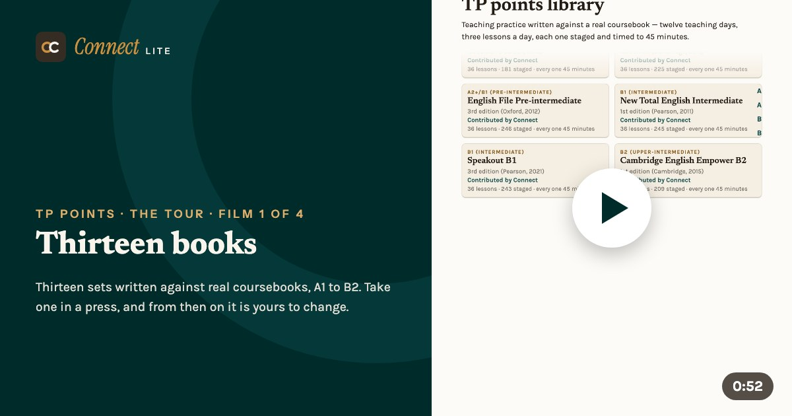
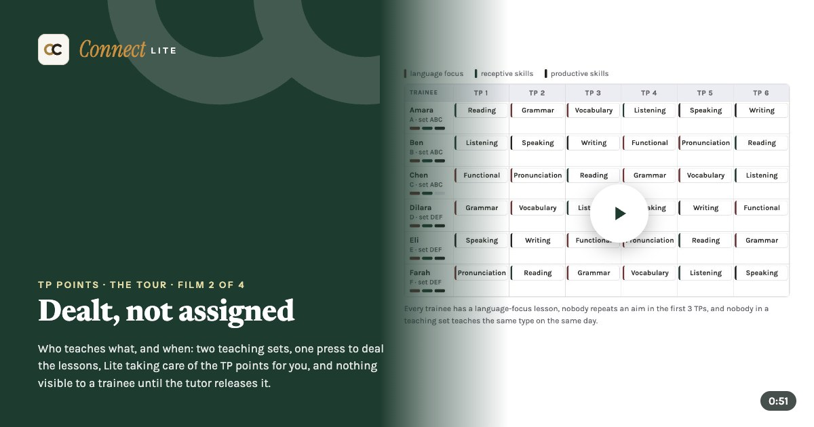
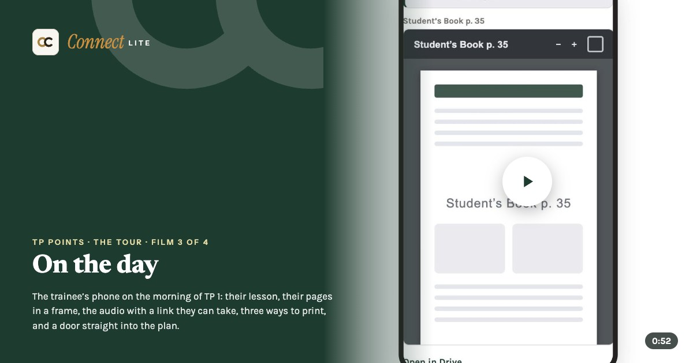
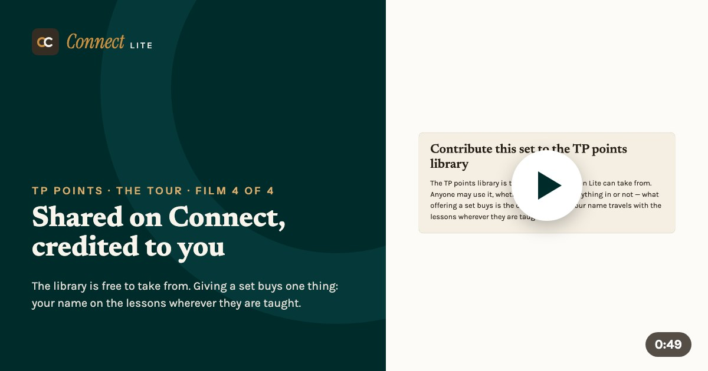

Your CELTA course, in one place
Twenty-five short films: the first day to the last, the timetable, TP points, volunteer students, the noticeboard and the CELTA 5, and one CELTA course from every side.
From the first day to the last · seven films
 Cards and signaturesA welcome card for the tutor, each trainee and each volunteer. Each signs once · 22 seconds
Cards and signaturesA welcome card for the tutor, each trainee and each volunteer. Each signs once · 22 seconds Phonology: soundsMatch the sounds, click the chart, hear each one · 45 seconds
Phonology: soundsMatch the sounds, click the chart, hear each one · 45 seconds Guided discoveryRead the text, answer three questions, write the rule · 39 seconds
Guided discoveryRead the text, answer three questions, write the rule · 39 seconds The envelopeThe tutor’s feedback arrives sealed, and the trainee opens it · 17 seconds
The envelopeThe tutor’s feedback arrives sealed, and the trainee opens it · 17 seconds The tutor’s columnMark what stands out, then every empty one S · 21 seconds
The tutor’s columnMark what stands out, then every empty one S · 21 seconds The last pageThe class photo, how far they came, and what people said about them · 28 seconds
The last pageThe class photo, how far they came, and what people said about them · 28 seconds One tap eachA few minutes, anonymous unless they choose, sent to the centre in one email · 29 seconds
One tap eachA few minutes, anonymous unless they choose, sent to the centre in one email · 29 seconds
The timetable · five films
TP points · four films

Thirteen booksThirteen sets, one per coursebook, and yours to change · 52 seconds
Dealt, not assignedTeaching sets, the rotation, the rules, release · 50 seconds
On the dayYour lesson, your pages, your slot, on your phone · 51 seconds
Shared on Connect, credited to youContribute a set: what travels, what stays, whose name it carries · 49 seconds
Volunteer students · two films
The course noticeboard
The CELTA 5 · two films
One CELTA course · four films
See it working: four demo links to walk round, and the rates. lite@celtaconnect.com